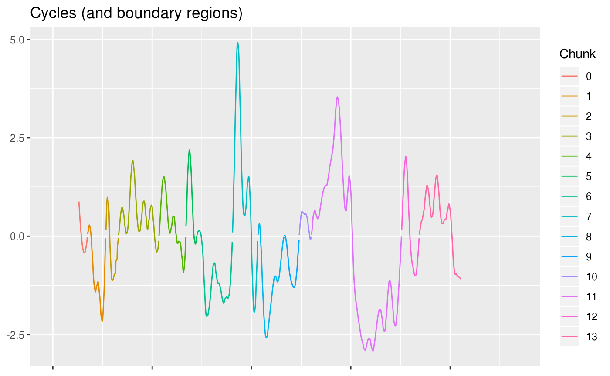
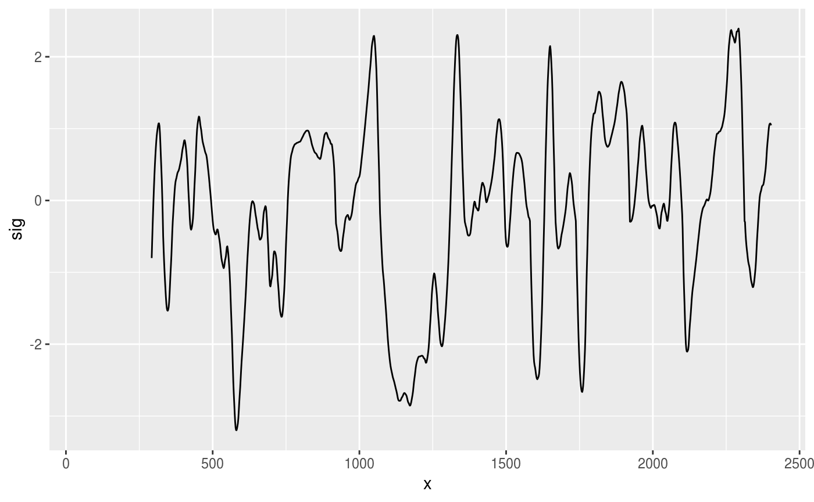
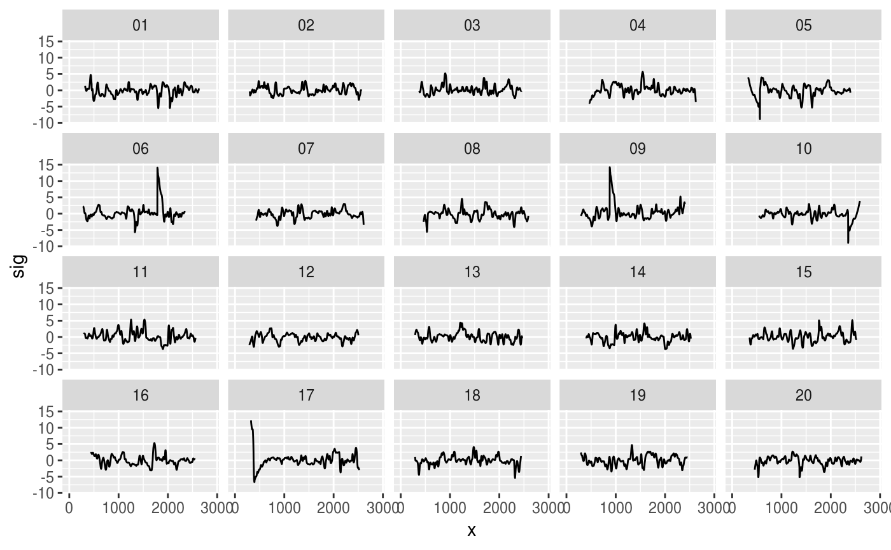
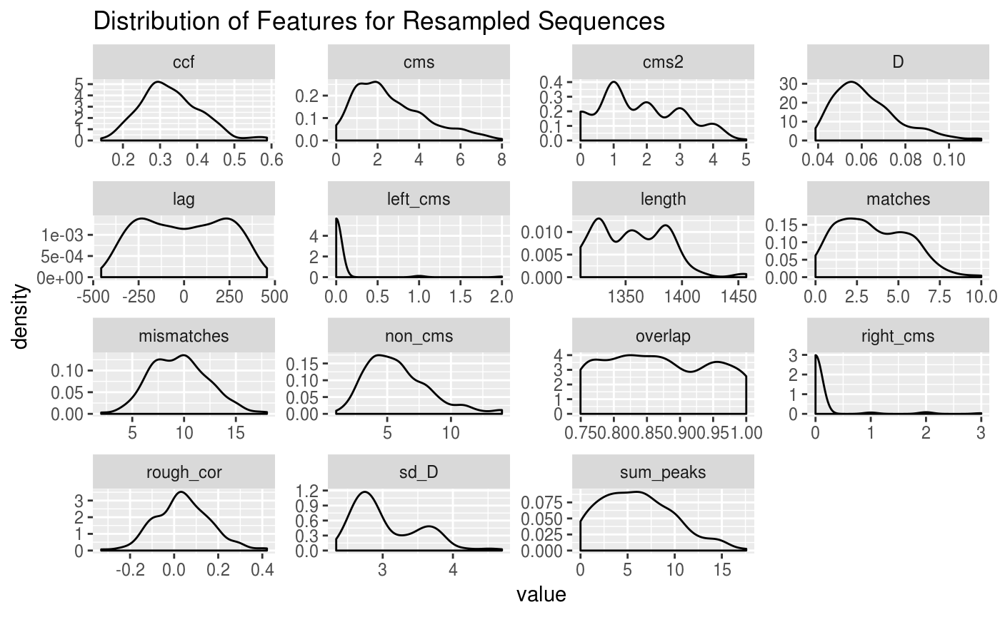

The goal of bulletsamplr is to create bullet signatures which can be used to examine the behavior of match statistics under truly random conditions.
Installation
You can install the released version of bulletsamplr from github with:
Example
library(ggplot2)
library(bulletsamplr)
library(bulletxtrctr)
library(dplyr)
library(purrr)
library(stringr)Creating cycles for resampling
We start with a signature from a scanned bullet land:
data(sig)
ggplot(aes(x = x, y = sig), data = sig) +
geom_line() +
ggtitle("Original Signature") +
theme(axis.title = element_blank(), axis.text.x = element_blank())Land Signature
The threshold bootstrap creates new sequences by resampling “cycles” from actual data. These cycles are created as follows:
First, the median of the signature is used to divide the signature into cycles of one positive and one negative region of the signature (relative to the median value).
threshold <- median(sig$sig, na.rm = T)
ggplot(aes(x = x, y = sig), data = sig) +
geom_line() +
geom_hline(aes(yintercept = threshold), color = "red") +
ggtitle("Threshold used to create cycles for future sample signatures") +
theme(axis.title = element_blank(), axis.text.x = element_blank())
#> Warning: Removed 265 rows containing missing values (geom_path).Land Signature. Cycles are created when the sequence crosses the median, and include one positive region and one negative region. This ensures continuity between adjacent segments.
These divisions are shown below, with each segment in a different color; adjacent segments are disjoint.
sig_slices <- crosscut_slice(sig) %>% bind_rows() %>%
group_by(.chunk) %>%
# mutate(x = x - mean(x, na.rm = T)) %>%
ungroup()
sig_slices %>%
group_by(.chunk) %>%
mutate(x = ifelse(.chunk == max(sig_slices$.chunk), rev(x), x)) %>%
mutate(sig = ifelse(.chunk == max(sig_slices$.chunk), -sig, sig)) %>%
ungroup() %>%
arrange(.chunk, x) %>%
mutate(xnew = 1:nrow(.)) %>%
ggplot(data = ., aes(x = xnew*1.5625, y = sig, color = factor(.chunk))) + geom_line() +
scale_color_discrete("Chunk") +
ggtitle("Cycles (and boundary regions)") +
theme(axis.title = element_blank(), axis.text.x = element_blank())
#> Warning: Removed 265 rows containing missing values (geom_path).
The cycles are then post-processed so that they all share the same orientation (positive portion of the cycle first); this requires that the boundary chunks be oriented so that the final portion of the chunk is negative. End chunks are thus reversed (in x) and may be flipped in y depending on the original orientation.
sig_slices$chunk_label <- factor(
sig_slices$.chunk,
labels = c("boundary_start",
paste("cycle", unique(sig_slices$.chunk)[-c(1, max(sig_slices$.chunk))]),
"boundary_end"))
ggplot(aes(x = x, y = sig, group = .chunk), data = sig_slices) +
facet_wrap(~chunk_label, scales = "free") +
geom_line() + theme(axis.title = element_blank()) +
ggtitle("Sliced Land Signature")
#> Warning: Removed 265 rows containing missing values (geom_path).Slices of land signature. Note that the boundary_end slice has been reversed (in x) and flipped (in y) so that it is ‘in phase’ with the positive-to-negative cycles in the main portion of the signature.
The cycles can then be saved to a database, or the data frame of cycles can be reassembled directly into new sequences. Ideally, of course, new sequences would be assembled from a library composed of cycles from many different signatures.
Resampling cycles to create new sequences
This portion of the tutorial will use cycles derived from Barrel 1, Bullets 1 and 2 of the Hamby 252 series, downloaded from NIST (the x3ptools package includes these bullets). The bulletxtrctr demo has code for obtaining and processing these files to obtain the signatures used to create the signature_slices object.
# Load sample signature slices
data(signature_slices)
# 171 different sequences
length(unique(signature_slices$id))
#> [1] 171
# Sequence types
signature_slices %>% select(id, type) %>%
unique() %>%
group_by(type) %>%
count()
#> # A tibble: 2 x 2
#> # Groups: type [2]
#> type n
#> <chr> <int>
#> 1 boundary 24
#> 2 pn 147The 12 lands used to create signature_slices produced 171 sequences, of which 24 are boundary sequences and do not contain complete cycles, and 147 are complete cycles, oriented so that the positive portion of the cycle comes first.
First, we choose a target signature length. The two bullets used to derive these sequences have an average signature length of 1511.333, so a target signature length of 1500 will produce sequences approximately the same as the original signatures.
In the call to crosscut_assemble, we specify the output resolution to be 1.5625 microns, which is the resolution of the original scans.
set.seed(309240538)
seq1 <- crosscut_assemble(1500, signature_slices, output_res = 1.5625)
ggplot(seq1, aes(x = x, y = sig)) + geom_line()
#> Warning: Removed 148 rows containing missing values (geom_path).
We can use the assembled sequence to assess the distribution of features created by bulletxtrctr under the null distribution:
set.seed(20401889)
n <- 20
# Assemble n sequences from signature_slices
seqs <- purrr::map_df(1:n,
~crosscut_assemble(len = 1500, df = signature_slices, output_res = 1.5625),
.id = 'rep') %>%
mutate(rep = str_pad(rep, 2, "left", "0"))
ggplot(seqs, aes(x = x, y = sig, group = rep)) + geom_line() +
facet_wrap(~rep)
#> Warning: Removed 2368 rows containing missing values (geom_path).
chunks_per_seq <- seqs %>% group_by(rep) %>%
select(rep, id, .idx) %>%
unique() %>%
summarize(chunks = n())
seq_replications <- seqs %>% group_by(id) %>%
select(rep, id, .idx) %>%
unique() %>% summarize(chunks = n())Each sequence had between 11 and 21 chunks composed of a cycle or a partial cycle (in the case of a boundary region). With 171 chunks available, we would expect that each chunk was re-used around 10.0588235 times (note that the library of cycles is kept small for demonstration purposes; in real life, we would want a much larger library). In fact, each chunk was used between 1 and 5 times.
# Nest generated sequences
nested_seqs <- seqs %>%
tidyr::nest(-rep, .key = sig)
# Set up comparison matrix
alignments <- tidyr::crossing(data_frame(seq1 = unique(seqs$rep)),
data_frame(seq2 = unique(seqs$rep))) %>%
filter(seq1 != seq2) %>%
left_join(nested_seqs, by = c("seq1" = "rep")) %>%
rename(sig1 = sig) %>%
left_join(nested_seqs, by = c("seq2" = "rep")) %>%
rename(sig2 = sig)
# Function to compute rows of overlap
overlap_by_chance <- function(df1, df2) {
mean(df1$id[!is.na(df1$sig)] %in% df2$id[!is.na(df2$sig)])
}
alignments <- alignments %>%
mutate(
overlap = purrr::map2_dbl(.x = sig1, .y = sig2, overlap_by_chance),
aligned = purrr::map2(.x = sig1, .y = sig2, ~sig_align(.x$sig, .y$sig)),
striae = purrr::map(aligned, sig_cms_max, span = 75)
) %>%
mutate(
features = purrr::map2(.x = aligned, .y = striae, .f = extract_features_all, resolution = 1.5625)
)With a cycle library of 171 chunks, we can expect that significant overlap between resampled sequences might occur. Thus, the conclusions drawn about the null distribution of features in this README should not be extrapolated; much different (and better) results should be expected when using a feature library of sufficient size.
ggplot(alignments, aes(x = seq1, y = seq2, fill = overlap)) + geom_tile() +
scale_fill_gradient("Proportion\noverlap b/w\nSequence 1,\nSequence2", low = "white", high = "red", limits = c(0, 1)) +
coord_fixed() +
xlab("Resampled Sequence 1") + ylab("Resampled Sequence 2")Proportion of values of sequence 1 which overlap with sequence 2
features <- alignments %>%
select(seq1, seq2, features) %>%
tidyr::unnest() %>%
tidyr::gather(key = "var", value = "value", -seq1, -seq2)
features %>%
filter(!str_detect(var, "_mm")) %>%
ggplot(aes(x = value)) +
geom_density() +
facet_wrap(~var, scales = "free") +
ggtitle("Distribution of Features for Resampled Sequences")